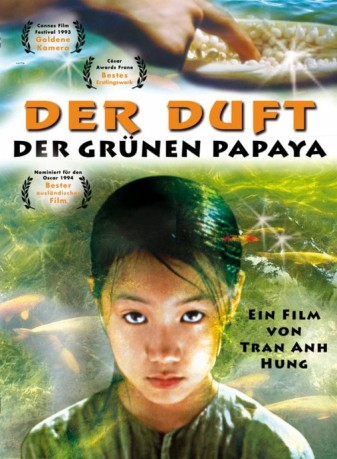

Auszeichnungen: für 1 Oscars nominiert
 gesehen am 08.04.2016
gesehen am 08.04.2016Alternativ: The Scent of Green Papaya (Englischer Titel)
Auszeichnungen: für 1 Oscars nominiert gesehen am 08.04.2016
 
 IMDB-Wertung: 7.4 / 10
IMDB-Wertung: 7.4 / 10  Metascore:
Metascore: 
Vietnam in den 50er Jahren. Mui, ein junges Mädchen vom Land, kommt als Dienerin zu einer bürgerlichen Familie nach Saigon. Ihre einzige Vertraute findet sie in der alten Thi, die sie in allem unterweist, was eine Frau in diesem Haushalt wissen muß: die Geheimnisse der Kochkunst und vor allem die traditionelle Zubereitung der Papaya. Nach einer arbeitsreichen Jugend folgt die schönste Zeit in ihrem Leben. Dienerschaft und Liebe vermischen sich unmerklich - sie findet in dem jungen Komponisten Khuyen ihre große Liebe, dem sie von nun an dienen wird, auf ihre ganz eigene Weise...Quelle: www.digitalvd.de
Jahr: 1993
Dauer: 104 Minuten
FSK: 12
Land: Frankreich Studio: Prokino FilmverleihTonspuren: DD2.0 - ,
Untertitel: Deutsch, Englisch,
Auflösung: 1080p (1808x1080) Größe: 8263 MB
Regisseur: Tran Anh Hung
Drehbuch: Claude Zidi
Soundtrack:
Darsteller:
Datei: X:\HD-Eastern-Modern(A-M)\Duft der grünen Papaya, Der (1993, FSK12, 1808x1080).mkv seit 08.04.2016
Festplatte: HD Eastern+Western
 Es gibt insgesamt 104 Filme in der Gruppe 'HD-Eastern-Modern(A-M)'
Es gibt insgesamt 104 Filme in der Gruppe 'HD-Eastern-Modern(A-M)'